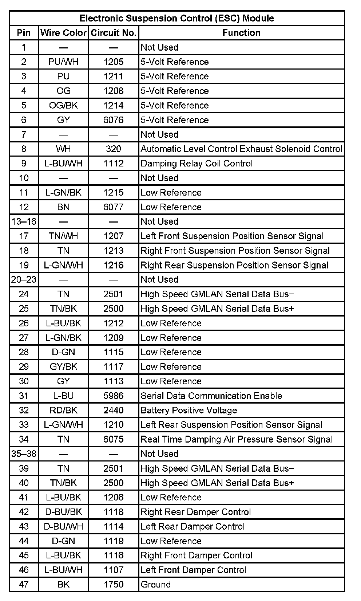
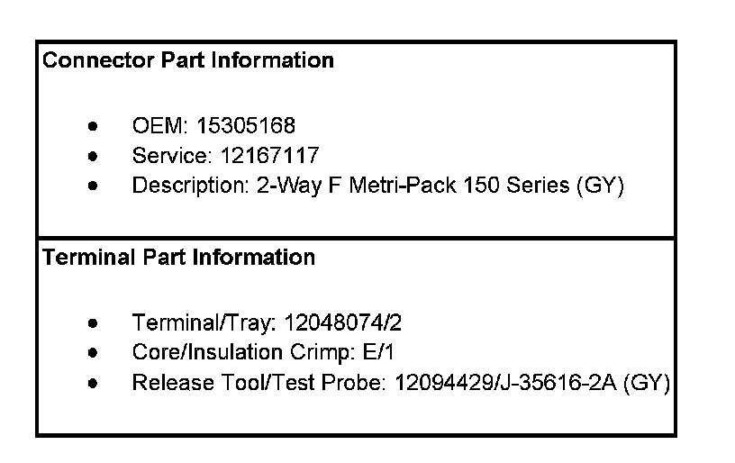

Electronic Suspension Control
Electronic Suspension Control Connector End Views
Electronic Suspension Control (ESC) Module
Electronic Suspension Control (ESC) Module:
Electronic Suspension Control (ESC) Module:

Suspension Damper Solenoid - LF

Suspension Damper Solenoid - LR
Suspension Damper Solenoid - RF
Suspension Damper Solenoid - RR
Suspension Position Sensor - LF
Suspension Position Sensor:

Suspension Position Sensor - LF:

Suspension Position Sensor - LR
Suspension Position Sensor:
Suspension Position Sensor - LR:
Suspension Position Sensor - RF
Suspension Position Sensor:
Suspension Position Sensor - RF:
Suspension Position Sensor - RR
Suspension Position Sensor:

Suspension Position Sensor - RR: